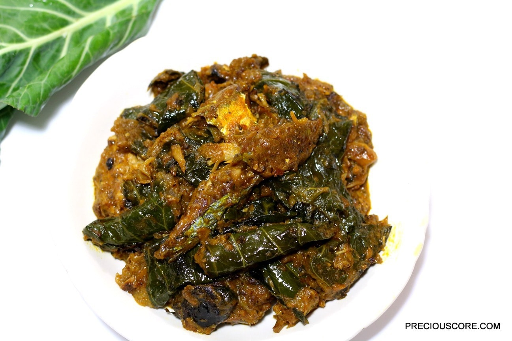

Odin Recipes

Traditionally made with cocoyam wrapped with cocoyam leaves
Ingredients
- cocoyam
- crayfish
- palmoil
- onion
- ginger,gallic,pepper,maggi,salt
Steps
- cut cocoyam leaves to desired sizes
- peel off cocoyams and wash
- grate cocoyams
- wrap the mixture with leaves into desired sizes
- add ingredients
- serve on a plate and enjoy your meal